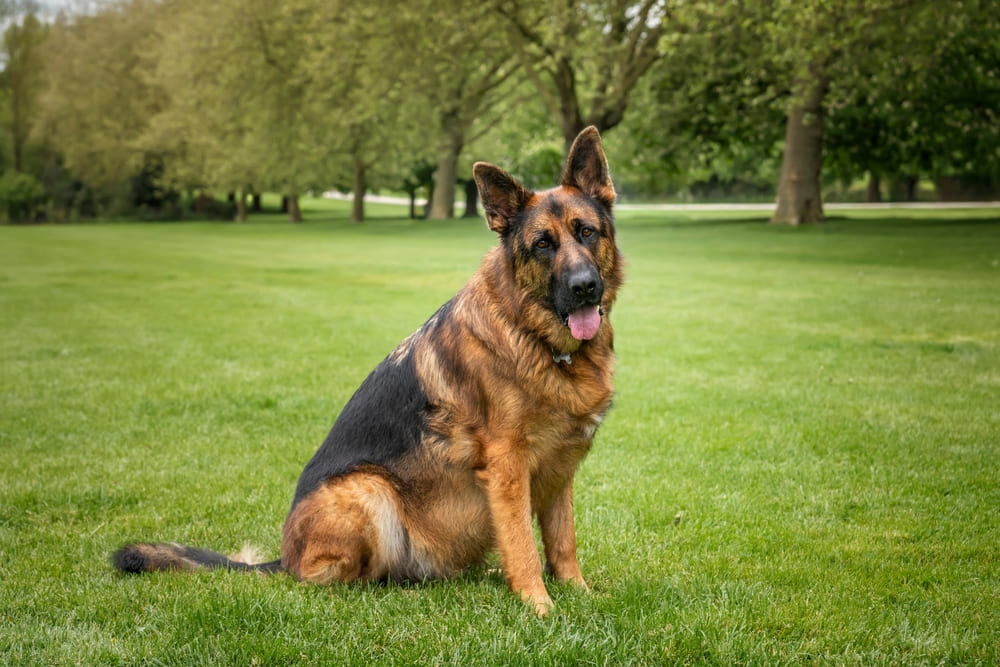
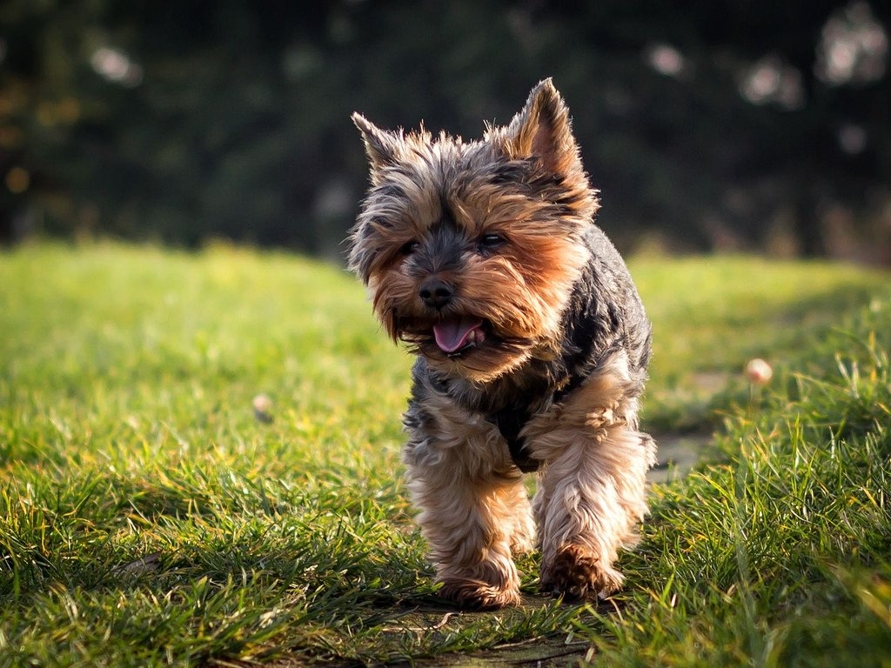
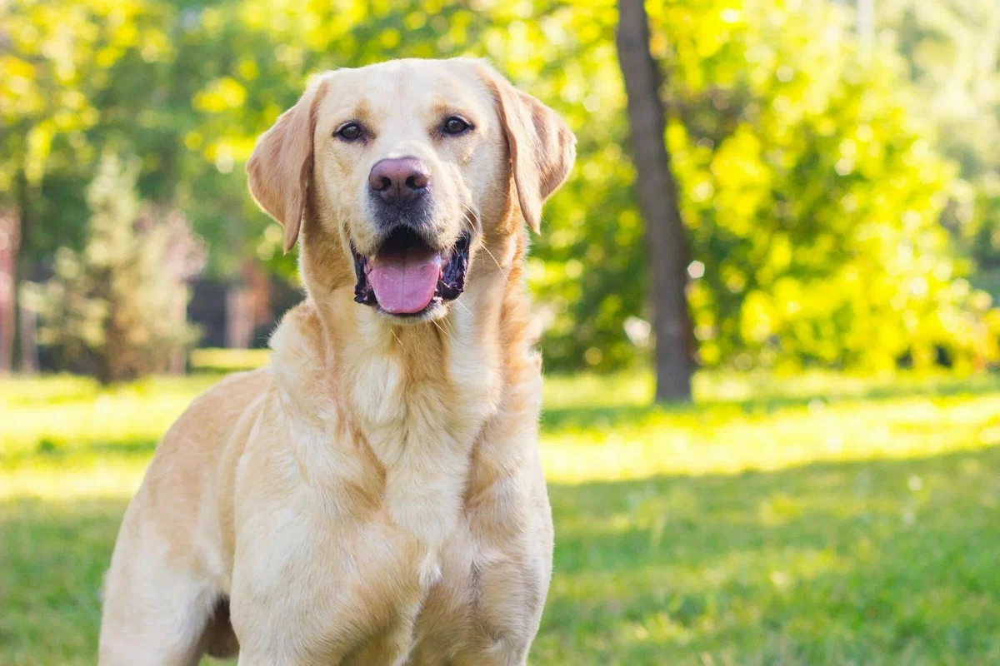
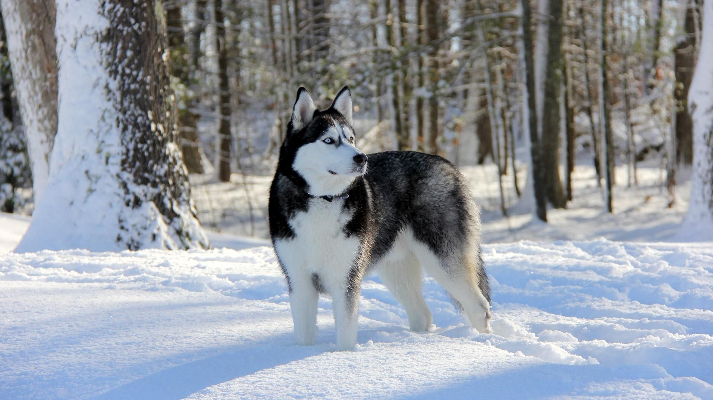
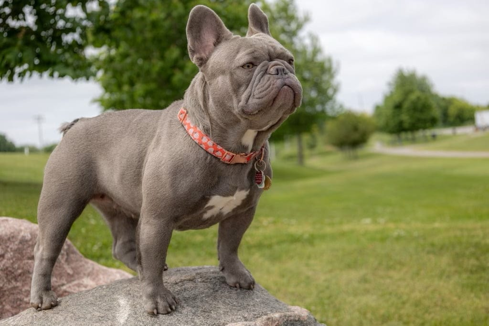
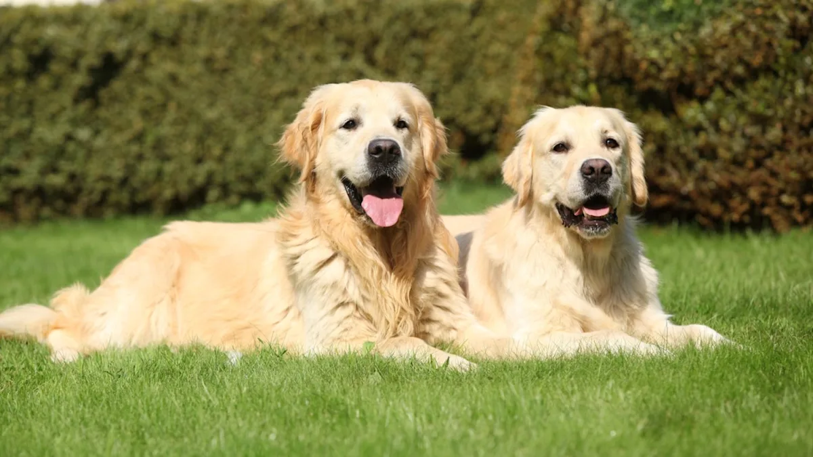

Фильтр по категориям:
Популярные породы собак

Немецкая овчарка
СлужебнаяУмная, преданная и универсальная порода, широко используемая в полиции, армии и как собака-поводырь.
60-65 см
Рост
9-13 лет
Продолжительность жизни
Высокая
Активность

Йоркширский терьер
ДекоративнаяМаленькая, энергичная и уверенная в себе собака с длинной шелковистой шерстью, не линяет и подходит аллергикам.
15-18 см
Рост
13-16 лет
Продолжительность жизни
Средняя
Активность

Лабрадор-ретривер
ОхотничьяДружелюбная, общительная и активная порода, отлично ладит с детьми и часто используется как собака-поводырь.
54-57 см
Рост
10-14 лет
Продолжительность жизни
Очень высокая
Активность

Сибирский хаски
ЕздоваяЭнергичная, выносливая и дружелюбная порода с густой шерстью и пронзительными голубыми глазами.
50-60 см
Рост
12-15 лет
Продолжительность жизни
Очень высокая
Активность

Французский бульдог
ДекоративнаяКомпактная, мускулистая собака с большими стоячими ушами и спокойным, дружелюбным характером.
27-35 см
Рост
10-12 лет
Продолжительность жизни
Низкая
Активность

Золотистый ретривер
ОхотничьяДобродушная, умная и преданная порода с красивой золотистой шерстью, отлично подходит для семей с детьми.
51-61 см
Рост
10-12 лет
Продолжительность жизни
Высокая
Активность